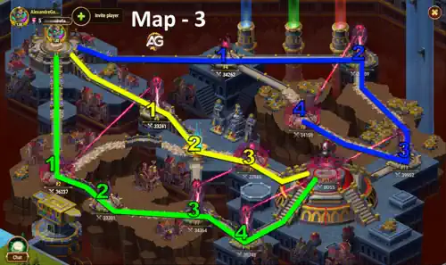
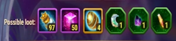
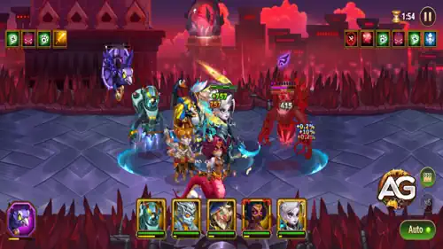

Dicas de Caminho no Mapa: Três jogadores devem seguir as rotas abaixo. Espere seus aliados chegarem aos pontos de buff antes de atacar para remover os bônus inimigos e facilitar a vitória. A cada torre destruída, o chefe final perde poder.
Copiado!
Caminho Azul: 04 → 12 → 13 → Chefe (x2)
Caminho Amarelo: 05 → 06 → 09 → Chefe (x2)
Caminho Verde: 02 → 03 → 07 → 10 → Chefe

Mapa de Aventura #3 - Profundezas da Cidade Ghirwil, Hero Wars: Era de Dominion
Mapa de Aventura PET #3 – Profundezas da Cidade Ghirwil
Nível Mínimo de Herói: 49+
Poder Total Recomendado: 40.000+
As Profundezas da Cidade Ghirwil são um dos primeiros Mapas de Aventura em Hero Wars: Era de Dominion, projetado para equipes de mascotes a partir do nível 45. É importante coordenar com seus companheiros de guilda, pois o mapa exige três jogadores para ser completado. Cada um deve seguir um caminho designado e aguardar nas torres de buff para que todo o time se beneficie antes de prosseguir. Quanto mais torres forem destruídas, mais fracos os inimigos se tornam especialmente o chefe.
Tempo e trabalho em equipe são fundamentais. Só prossiga depois que todos estiverem prontos para eliminar os buffs e alcançar a área do chefe final. Sempre utilize as rotas mais curtas e eficientes para minimizar os custos de Pontos de Ação.
Recompensas Possíveis do Mapa 03
Poção de Mascote: x97
Partícula do Caos: x50
Esfera de Invocação de Mascote: x4
Pedra da Lua: x1 (Usada por: Fenris, Merlin)
Pedra da Noite: x1 (Usada por: Khorus, Cain)
Pedra do Sol: x1 (Usada por: Biscuit, Albus)
Mapa #3 - Recompensas Possíveis

Como Derrotar o Chefe
Para derrotar o chefe nas Profundezas da Cidade Ghirwil, sua equipe deve primeiro eliminar os esquadrões do Olho do Arauto localizados nos pontos 10 e 13. Esses esquadrões aplicam buffs poderosos ao chefe, como resistência massiva a dano e aumento no dano causado. Sem removê-los, o chefe será quase impossível de derrotar. Depois que os buffs forem eliminados, concentre-se em causar dano explosivo e manter a equipe viva use mascotes e heróis que causem dano baseado em porcentagem ou que reduzam a armadura/defesa mágica. A coordenação é essencial, pois mesmo sem os buffs, o chefe continua altamente resistente a ataques diretos de alvo único.

Mapa de Aventura #3 - Chefe, Hero Wars: Era de Dominion.
Buff do Chefe:
Aumenta o dano causado em 25%
Reduz o dano recebido em 75%
Multiplica a Vida por 10
Aumenta o ganho de energia em 100%
Diminui a duração de efeitos negativos em 80%
Nenhum ataque pode causar mais de 1% da Vida Máxima do chefe
Imune a habilidades de redução de energia
Aumento de Dano do Chefe:
Resistência a Dano: Reduz o dano recebido em 55%
Derrote o Esquadrão 13 - Olho do Arauto para remover esse buff do CHEFE
Aumento de Dano: Aumenta o dano causado em 110%
Derrote o Esquadrão 10 - Olho do Arauto para remover esse buff do CHEFE
Conclusão
As Profundezas da Cidade Ghirwil são um teste rigoroso de coordenação, escalonamento de poder e estratégia de rotas. Certifique-se de seguir os níveis de poder recomendados, limpar as torres de forma estratégica e eliminar os esquadrões do Olho do Arauto antes de enfrentar o chefe. Use este guia e as rotas copiáveis para se coordenar de forma mais eficiente com sua guilda.
O tempo é tudo nesta aventura. Avançar cedo demais sem esperar seus companheiros nas torres de buff pode resultar em perdas desnecessárias e desperdício de Pontos de Ação. Comunique-se claramente com sua guilda e certifique-se de que os três jogadores estejam sincronizados, especialmente antes de remover os buffs que afetam a luta contra o chefe. O mapa é curto, mas punitivo se for enfrentado sem cuidado.
À medida que sua equipe se fortalece e seus mascotes evoluem, você será capaz de completar este mapa mais rapidamente e com mais confiança. As Profundezas da Cidade Ghirwil também oferecem recompensas úteis como Partículas do Caos, Esferas de Invocação e pedras de mascote para Fenris, Cain, Albus e outros tornando-o digno de repetição. Dominar este mapa inicial é um ótimo passo para conquistar aventuras mais difíceis em Hero Wars: Era de Dominion.
Você gostou do nosso Guia do Mapa de Aventura 3 para Hero Wars Web e Facebook? Há algo que não entendeu ou gostaria de sugerir mudanças? Convidamos você a se juntar à nossa sessão de comentários na página do Alexandre Games Blog. Não hesite em expressar sua opinião, clarificar suas dúvidas e compartilhar sua sugestões. Clique no botão abaixo para começar:
 Mapa de Aventura de Mascotes #2 - Guia do Vale dos Elementos
Mapa de Aventura de Mascotes #2 - Guia do Vale dos Elementos
 Mapa de Aventura de Mascotes #5 – Cerco a Strongford
Mapa de Aventura de Mascotes #5 – Cerco a Strongford
 Mapa de Aventura de Mascotes #6 – Guia para Hero Wars: Era de Dominion
Mapa de Aventura de Mascotes #6 – Guia para Hero Wars: Era de Dominion

 Como Ativar Recompensas de Código Promocional em Hero Wars: Era de Dominion 2025
Como Ativar Recompensas de Código Promocional em Hero Wars: Era de Dominion 2025